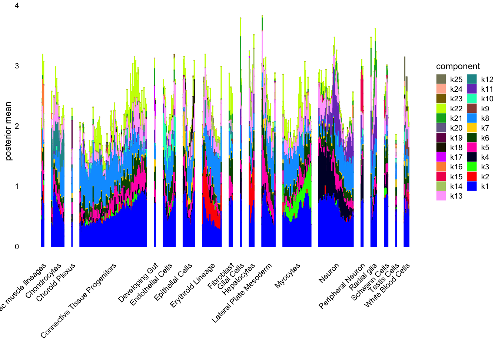
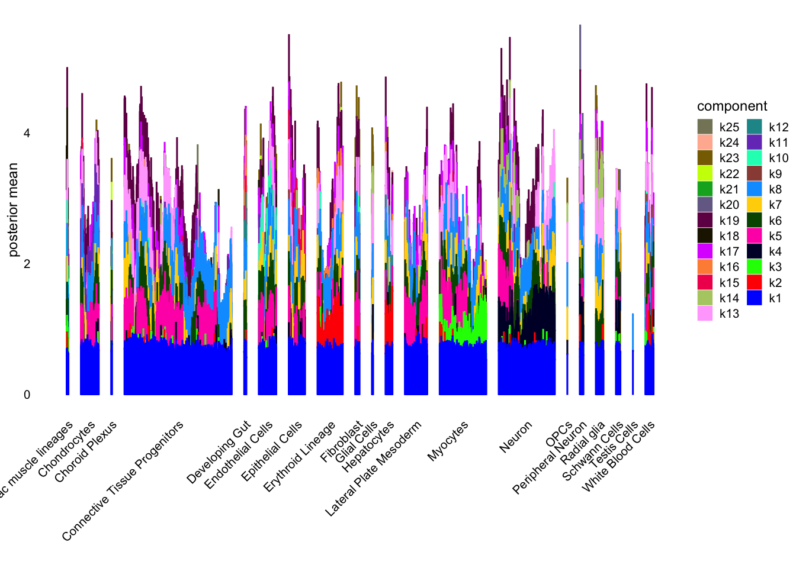

Analysis of Single-cell (Spatial) Transcriptomics From Mouse Embryos
Ziang Zhang
2024-11-15
Last updated: 2024-11-15
Checks: 7 0
Knit directory:
single-cell-jamboree/analysis/
This reproducible R Markdown analysis was created with workflowr (version 1.7.1). The Checks tab describes the reproducibility checks that were applied when the results were created. The Past versions tab lists the development history.
Great! Since the R Markdown file has been committed to the Git repository, you know the exact version of the code that produced these results.
Great job! The global environment was empty. Objects defined in the global environment can affect the analysis in your R Markdown file in unknown ways. For reproduciblity it’s best to always run the code in an empty environment.
The command set.seed(1) was run prior to running the
code in the R Markdown file. Setting a seed ensures that any results
that rely on randomness, e.g. subsampling or permutations, are
reproducible.
Great job! Recording the operating system, R version, and package versions is critical for reproducibility.
Nice! There were no cached chunks for this analysis, so you can be confident that you successfully produced the results during this run.
Great job! Using relative paths to the files within your workflowr project makes it easier to run your code on other machines.
Great! You are using Git for version control. Tracking code development and connecting the code version to the results is critical for reproducibility.
The results in this page were generated with repository version 90cbbb9. See the Past versions tab to see a history of the changes made to the R Markdown and HTML files.
Note that you need to be careful to ensure that all relevant files for
the analysis have been committed to Git prior to generating the results
(you can use wflow_publish or
wflow_git_commit). workflowr only checks the R Markdown
file, but you know if there are other scripts or data files that it
depends on. Below is the status of the Git repository when the results
were generated:
Ignored files:
Ignored: .Rproj.user/
Untracked files:
Untracked: .DS_Store
Untracked: .gitignore
Untracked: analysis/.DS_Store
Untracked: data/.DS_Store
Untracked: data/mouse_embryo/
Untracked: output/.DS_Store
Untracked: output/mouse_embryo/
Note that any generated files, e.g. HTML, png, CSS, etc., are not included in this status report because it is ok for generated content to have uncommitted changes.
These are the previous versions of the repository in which changes were
made to the R Markdown (analysis/mouse_embryo.Rmd) and HTML
(docs/mouse_embryo.html) files. If you’ve configured a
remote Git repository (see ?wflow_git_remote), click on the
hyperlinks in the table below to view the files as they were in that
past version.
| File | Version | Author | Date | Message |
|---|---|---|---|---|
| Rmd | 90cbbb9 | Ziang Zhang | 2024-11-15 | workflowr::wflow_publish("analysis/mouse_embryo.Rmd") |
Data
This single cell RNA data is available here, as studied in Srivatsan et al, 2021.
The dataset considers \(108725\) cells and \(39198\) genes (after QC), measured with spatial locations in the mouse embryo.
library(Seurat)
library(Matrix)
library(data.table)
library(flashier)
library(ggplot2)
library(patchwork)
library(cowplot)
library(RColorBrewer)
library(Biobase)
library(ggpubr)
library(gridExtra)
seurat_object <- readRDS("../data/mouse_embryo/processed_seurat/seurat_object.rds")
Y <- t(seurat_object$RNA$data)The data contains the UMAP information that we can directly use for visualization, and compare with the “anatomical annotation” and the “cluster label” in Srivatsan et al, 2021.
source("../code/Customized_Plots.R")
umap_original_embeddings <- cbind(seurat_object$umap1, seurat_object$umap2)
p1 <- DimPlotSagnik(umap_original_embeddings, group.by = seurat_object$anatomical_annotation, pt.size = 1) +
theme(plot.title = element_text(hjust = 0.5)) +
ggtitle("UMAP by Anatomical Annotation")Rasterizing points since number of points exceeds 100,000.
To disable this behavior set `raster=FALSE`p2 <- DimPlotSagnik(umap_original_embeddings, group.by = seurat_object$final_cluster_label, pt.size = 1) +
theme(plot.title = element_text(hjust = 0.5)) +
ggtitle("UMAP by Cluster Label")Rasterizing points since number of points exceeds 100,000.
To disable this behavior set `raster=FALSE`# Combine plots side-by-side
combined_plot <- p1 + p2 + plot_layout(ncol = 2)
combined_plotTrying EBMF
Let’s try to implement the EBMF algorithm with the
flashier package, with different constraints and prior
distributions.
Considering the large computational cost, we will first try to run the EBMF algorithm without backfitting.
cols_to_keep <- colSums(Y != 0, na.rm = TRUE) > 0
Y <- Y[, cols_to_keep]
n <- nrow(Y)
x <- rpois(1e7, 1/n)
s1 <- sd(log(x + 1))
a <- 1
size_factors <- rowSums(Y)
size_factors <- size_factors / mean(size_factors)
shifted_log_counts <- log1p(Y / (a * size_factors))Non-Negative EBMF
For the first EBMF problem, we consider non-negative EBMF with
point_exponential priors:
flashier_fit_nn <- flash(shifted_log_counts,
ebnm_fn = ebnm_point_exponential,
var_type = 2,
greedy_Kmax = 25,
S = s1,
backfit = F)
plot(flashier_fit_nn,
plot_type = "structure",
pm_which = "loadings",
pm_groups = seurat_object$final_cluster_label,
bins = 20, gap = 25)flashier_fit_nn <- readRDS("../output/mouse_embryo/flashier_fit_nn.rds")
plot(flashier_fit_nn,
plot_type = "structure",
pm_which = "loadings",
pm_groups = seurat_object$final_cluster_label,
bins = 20, gap = 25)
Semi Non-Negative EBMF
ebnm_fn_list <- list()
ebnm_fn_list[[1]] <- flash_ebnm(
prior_family = "point_exponential"
)
ebnm_fn_list[[2]] <- flash_ebnm(
prior_family = "point_normal",
mode = "estimate"
)
flashier_fit_semi <- flash(shifted_log_counts,
ebnm_fn = ebnm_fn_list,
var_type = 2,
greedy_Kmax = 25,
S = s1,
backfit = F)
plot(flashier_fit_semi,
plot_type = "structure",
pm_which = "loadings",
pm_groups = seurat_object$final_cluster_label,
bins = 20, gap = 25)flashier_fit_semi <- readRDS("../output/mouse_embryo/flashier_fit_semi.rds")
ebnm_fn_list <- list()
ebnm_fn_list[[1]] <- flash_ebnm(
prior_family = "point_exponential"
)
ebnm_fn_list[[2]] <- flash_ebnm(
prior_family = "point_normal",
mode = "estimate"
)
plot(flashier_fit_semi,
plot_type = "structure",
pm_which = "loadings",
pm_groups = seurat_object$final_cluster_label,
bins = 20, gap = 25)
GBCD
ebnm_fn_list <- list()
ebnm_fn_list[[1]] <- flash_ebnm(
prior_family = "generalized_binary"
)
ebnm_fn_list[[2]] <- flash_ebnm(
prior_family = "point_laplace",
mode = "estimate"
)
flashier_fit_gbcd <- flash(shifted_log_counts,
ebnm_fn = ebnm_fn_list,
var_type = 2,
greedy_Kmax = 25,
S = s1,
backfit = F)
plot(flashier_fit_gbcd,
plot_type = "structure",
pm_which = "loadings",
pm_groups = seurat_object$final_cluster_label,
bins = 20, gap = 25)flashier_fit_gbcd <- readRDS("../output/mouse_embryo/flashier_fit_gbcd.rds")
ebnm_fn_list <- list()
ebnm_fn_list[[1]] <- flash_ebnm(
prior_family = "generalized_binary"
)
ebnm_fn_list[[2]] <- flash_ebnm(
prior_family = "point_laplace",
mode = "estimate"
)
plot(flashier_fit_gbcd,
plot_type = "structure",
pm_which = "loadings",
pm_groups = seurat_object$final_cluster_label,
bins = 20, gap = 25)
Trying Topic Models
Then, let’s try fitting a topic model to this dataset using
FastTopics.
library(fastTopics)
fasttopics_fit <- fit_topic_model(Y, k = 25)(This requires larger amount of RAM than I expected… Will do this on the server and add the results later.)
sessionInfo()R version 4.3.1 (2023-06-16)
Platform: aarch64-apple-darwin20 (64-bit)
Running under: macOS Monterey 12.7.4
Matrix products: default
BLAS: /Library/Frameworks/R.framework/Versions/4.3-arm64/Resources/lib/libRblas.0.dylib
LAPACK: /Library/Frameworks/R.framework/Versions/4.3-arm64/Resources/lib/libRlapack.dylib; LAPACK version 3.11.0
locale:
[1] en_US.UTF-8/en_US.UTF-8/en_US.UTF-8/C/en_US.UTF-8/en_US.UTF-8
time zone: America/Chicago
tzcode source: internal
attached base packages:
[1] stats graphics grDevices utils datasets methods base
other attached packages:
[1] gridExtra_2.3 ggpubr_0.6.0 Biobase_2.62.0
[4] BiocGenerics_0.48.1 RColorBrewer_1.1-3 cowplot_1.1.3
[7] patchwork_1.3.0 ggplot2_3.5.1 flashier_1.0.54
[10] ebnm_1.1-34 data.table_1.16.2 Matrix_1.6-4
[13] Seurat_5.1.0 SeuratObject_5.0.2 sp_2.1-4
loaded via a namespace (and not attached):
[1] RcppAnnoy_0.0.22 splines_4.3.1 later_1.3.2
[4] tibble_3.2.1 polyclip_1.10-7 fastDummies_1.7.4
[7] lifecycle_1.0.4 mixsqp_0.3-54 rstatix_0.7.2
[10] rprojroot_2.0.4 globals_0.16.3 lattice_0.22-6
[13] MASS_7.3-60 backports_1.5.0 magrittr_2.0.3
[16] plotly_4.10.4 sass_0.4.9 rmarkdown_2.28
[19] jquerylib_0.1.4 yaml_2.3.10 httpuv_1.6.15
[22] sctransform_0.4.1 spam_2.11-0 spatstat.sparse_3.1-0
[25] reticulate_1.39.0 pbapply_1.7-2 abind_1.4-8
[28] Rtsne_0.17 quadprog_1.5-8 purrr_1.0.2
[31] git2r_0.33.0 fastTopics_0.6-192 ggrepel_0.9.6
[34] irlba_2.3.5.1 listenv_0.9.1 spatstat.utils_3.1-0
[37] goftest_1.2-3 RSpectra_0.16-2 spatstat.random_3.3-2
[40] fitdistrplus_1.2-1 parallelly_1.38.0 leiden_0.4.3.1
[43] codetools_0.2-20 tidyselect_1.2.1 farver_2.1.2
[46] matrixStats_1.4.1 spatstat.explore_3.3-3 jsonlite_1.8.9
[49] progressr_0.14.0 Formula_1.2-5 ggridges_0.5.6
[52] survival_3.7-0 tools_4.3.1 progress_1.2.3
[55] ica_1.0-3 Rcpp_1.0.13 glue_1.8.0
[58] xfun_0.48 dplyr_1.1.4 withr_3.0.1
[61] fastmap_1.2.0 fansi_1.0.6 digest_0.6.37
[64] truncnorm_1.0-9 R6_2.5.1 mime_0.12
[67] colorspace_2.1-1 scattermore_1.2 gtools_3.9.5
[70] tensor_1.5 spatstat.data_3.1-2 RhpcBLASctl_0.23-42
[73] utf8_1.2.4 tidyr_1.3.1 generics_0.1.3
[76] prettyunits_1.2.0 httr_1.4.7 htmlwidgets_1.6.4
[79] scatterplot3d_0.3-44 deconvolveR_1.2-1 whisker_0.4.1
[82] uwot_0.1.16 pkgconfig_2.0.3 gtable_0.3.5
[85] workflowr_1.7.1 lmtest_0.9-40 htmltools_0.5.8.1
[88] carData_3.0-5 dotCall64_1.2 horseshoe_0.2.0
[91] scales_1.3.0 png_0.1-8 spatstat.univar_3.0-1
[94] ashr_2.2-66 knitr_1.48 rstudioapi_0.16.0
[97] reshape2_1.4.4 nlme_3.1-166 cachem_1.1.0
[100] zoo_1.8-12 Polychrome_1.5.1 stringr_1.5.1
[103] KernSmooth_2.23-24 parallel_4.3.1 miniUI_0.1.1.1
[106] softImpute_1.4-1 pillar_1.9.0 grid_4.3.1
[109] vctrs_0.6.5 RANN_2.6.2 promises_1.3.0
[112] car_3.1-3 xtable_1.8-4 cluster_2.1.6
[115] evaluate_1.0.1 invgamma_1.1 cli_3.6.3
[118] compiler_4.3.1 rlang_1.1.4 crayon_1.5.3
[121] SQUAREM_2021.1 future.apply_1.11.2 ggsignif_0.6.4
[124] labeling_0.4.3 plyr_1.8.9 fs_1.6.4
[127] stringi_1.8.4 viridisLite_0.4.2 deldir_2.0-4
[130] munsell_0.5.1 lazyeval_0.2.2 spatstat.geom_3.3-3
[133] RcppHNSW_0.6.0 hms_1.1.3 future_1.34.0
[136] shiny_1.9.1 highr_0.11 trust_0.1-8
[139] ROCR_1.0-11 igraph_2.1.1 broom_1.0.7
[142] RcppParallel_5.1.9 bslib_0.8.0